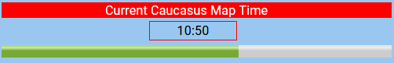

Rising Thunder Alpha Test
A DCS World Server

The “Rising Thunder DCS World Dedicated Server Series” is a long term, story driven DCS world, “multi-client”, “muti-campaign”, “career level ”, server series, greatly inspired by the excellent “BuddySpike Operation:BlueFlag” DCS World servers, and also inspired by the novel “Tom Clancy’s Red Storm Rising”, however, with many differences, along with a few twists and surprises planned.
The “Rising Thunder Alpha Test” servers are a persistent 24/7 client & AI (Bots) training campaign utilizing the DCS Caucasus and NTTR maps, with training tasks and objectives to fulfill for both coalitions. Once the development objectives of the Rising Thunder Alpha Test servers are met, it is planned for the Rising Thunder Alpha Test servers to transition to “Rising Thunder Beta” servers, along with all clients personas progress (that’s the plan anyway, however, keep in mind, this is an alpha version). In this first iteration of Rising Thunder Alpha Test each coalition will train on its own respective maps. The primary purpose of the “Rising Thunder Alpha Test” servers are to develop the base code and administration processes required for the planned forthcoming “Rising Thunder DCS World Dedicated Server Series”.
Description and Operation
The “Rising Thunder Alpha Test” servers are persistent.
Rising Thunder Server has a differing end goal.